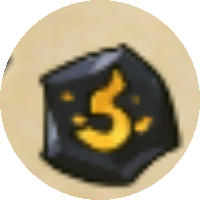
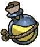

version 0.1.0
간이 마나 계산기
간단 계산기입니다 · 마나 캡 등은 고려하지 않아 실제 결과와 다를 수 있어요
기본 입력
?고철/흑요석 레벨, 스킬 유지시간, 구호품 보상, 방치할 시간 등 계산에 필요한 값을 입력하는 곳이에요.
고철 레벨

흑요석 레벨
스킬 유지시간(%)
{{ skillDurationStr }}
구호품 보상(%)
구호품 마나 : {{ itemRewardLo }}~{{ itemRewardHi }}
계산 기준

회복량
방치할 시간
시간
분
초
스킬 선택
?유지하고 싶은 스킬을 켜고, 슬라이더로 레벨(코스트)을 조절하고, 화살표로 부스터 여부를 설정하세요.
{{ sk.name }}
{{ sk.desc }}
계산 결과
?현재 입력값 기준으로 마나 수급률과 소모율을 비교해서, 스킬을 자동으로 계속 유지할 수 있는지 보여줘요.
{{ successLabel }}
마나 요구량 ({{ refDurationStr }}마다){{ manaNeededStr }}
자연 마나 회복량(분당){{ natRateStr }}
구호품 평균 마나(1회 기대값){{ expectedPickupStr }}
구호품 마나 수급률(분당){{ itmRateStr }}
총 마나 수급률(분당){{ supplyRateStr }}
필요 마나 소모율(분당){{ reqRateStr }}
스킬 1번당 손익계산
?각 스킬을 한 번 시전했을 때, 그 유지시간 동안 시간·마나 기준으로 이득인지 손해인지 보여줘요.
스킬
유지시간
필요마나
소모율/분
시간효율
마나효율
{{ row.name }}
{{ row.duration }}
{{ row.cost }}
{{ row.rate }}
{{ row.diffStr }}
{{ row.manaDiffStr }}
필요한 포션 개수
?방치할 시간 동안 마나가 부족해서 수동으로 포션을 마시고 스킬을 재시전해야 하는 횟수와, 그때 필요한 포션 개수를 계산해요.
필요한 포션 개수{{ potionCountStr }}
스킬을 하나 이상 켜주세요.
적정 유물 레벨 탐색 결과
?지금 켜둔 스킬 조합을 자동으로 계속 유지할 수 있는, 가장 낮은 고철·흑요석 레벨 조합을 찾아줘요.
필요 마나 소모율(분당){{ searchReqRateStr }}
고철 레벨{{ searchScrap }}
흑요석 레벨{{ searchObsidian }}
0~50 범위 내에서 조건을 만족하는 조합을 찾지 못했습니다.
기본값
기본 마나재생량 : 1/100초
기본 구호품 주기 : 40초
기본 구호품 생존시간 : 60초
기본 구호품 보상 : 1~12 중 무작위 × 0.5(어묵 제외)
기본 스킬 시간 : 5분
기호 설명
D : 스킬(버프) 유지시간
R : 필요 마나 소모율
T_f, u : 구호품 소비주기 계산용 중간값
P : 구호품 실제 소비주기(획득 주기)
E : 구호품 1회 평균 획득량
I : 구호품 마나 수급률
S : 총 마나 수급률
cost_i, D_i : i번째 스킬의 필요마나·유지시간
자연 마나 회복량(초당) = 0.6 × (1 + 흑요석×0.1) / 60
버프 유지시간 D = 300 × (1+스킬 유지시간%) / (부스터 ? 2 : 1)
필요 마나 소모율 R = Σ (cost_i / D_i)
T_f = 2000 / 고철, u = (T_f − 40) mod 100
소비주기 P = 40 (T_f<40) | T_f (u≤60) | T_f+(100−u) (그 외)
E = 0.5 × ( Σraw=1..12 floor(raw×(1+구호품 보상%)) / 12 )
구호품 수급률 I = E / P
총 수급률 S = 자연회복량 + (기준≠구호품X ? I : 0)
성공 조건: S > R
회당시간효율_i = D_i − cost_i / (S − (R − cost_i/D_i))
회당마나효율_i = (S − (R − cost_i/D_i)) × D_i − cost_i
탐색: min max(고철,흑요석) s.t. S>R, tie-break: 흑요석 asc → 고철 asc
계산식 피드백 받습니다! 저 수학 못해요 ㅜ